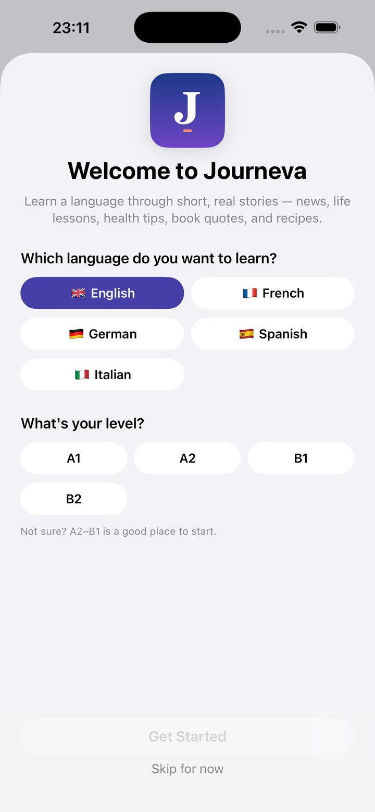
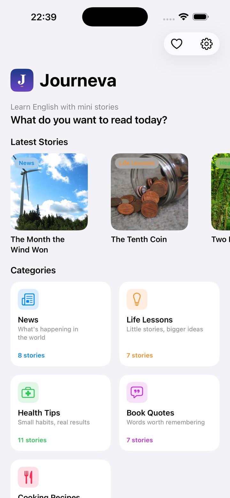
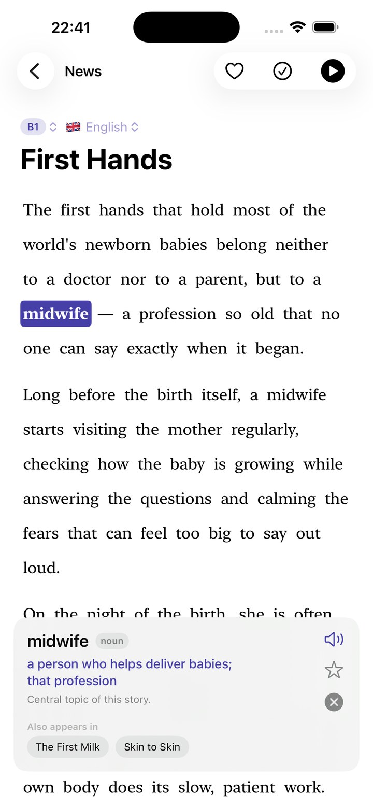
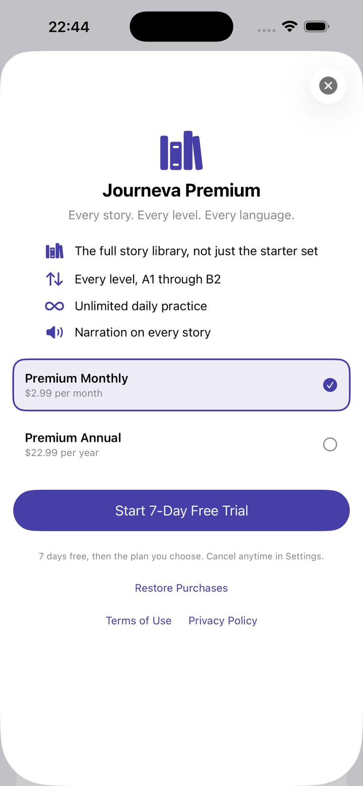
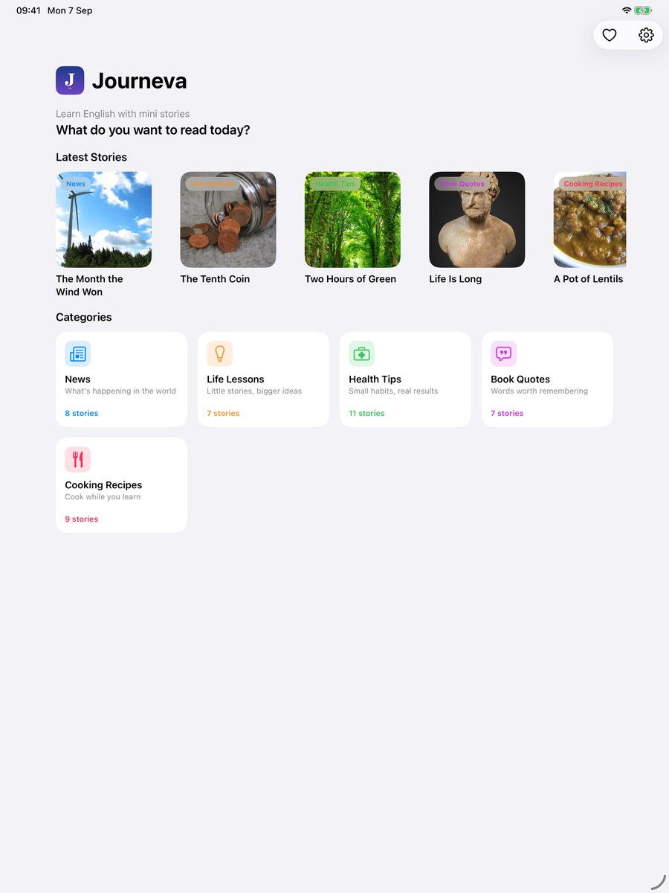
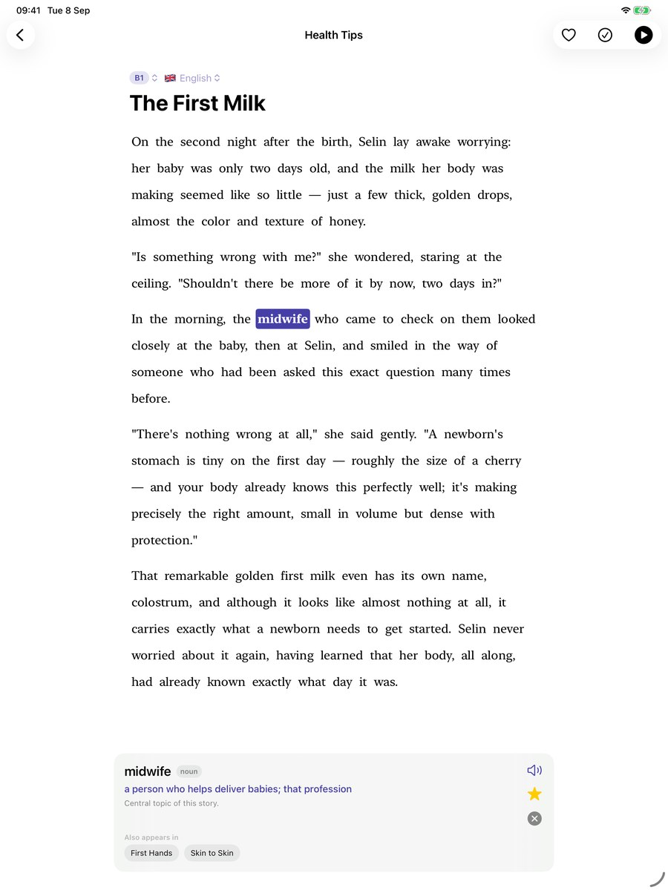

Download the press kit (ZIP, icon + all screenshots) →
In one sentence
Journeva teaches English, French, German, Spanish and Italian through short stories worth reading — each written at four levels, so you read a story at your level and then again one level up.
At a glance
- What
- A language-learning app built around reading, for iPhone and iPad (iOS 17 or later)
- Languages
- English, French, German, Spanish, Italian — every story in all five
- Levels
- CEFR A1, A2, B1, B2 — every story at all four; same plot and facts, richer language each step
- Library
- 42 stories × 5 languages × 4 levels at launch (840 texts); a new story every week, delivered inside the app
- Categories
- News (this month's good news), Life Lessons, Health Tips, Book Quotes, Cooking Recipes
- Features
- Tap any word for its meaning and a grammar note (every word is in the glossary); narration with the words highlighted as they're read; saved words come back for spaced practice with their original sentence; switch language inside a story
- Price
- Free: ten stories at every level, every story at A1. Journeva Premium €2.99/month or €24.99/year (7-day free trial, Family Sharing) unlocks every story at every level, narration everywhere, unlimited practice. Prices localised by the App Store.
- Privacy
- No account, no ads, no analytics, no tracking. Progress stays on the device. App Store privacy label: "Data Not Collected".
- Availability
- App Store, worldwide, September 2026
- Developer
- Shehan Chamara Withanage Perera, independent developer, Offenbach am Main (Frankfurt area), Germany
- Web
- journeva.app · every story free to read at A1 at journeva.app/stories
- Contact
- hello@journeva.app
Short description · ~60 words
Journeva is a language-learning app built around reading. Its library of short stories — positive news, life lessons and folk tales, health habits, lines from classic books, simple recipes — is written in English, French, German, Spanish and Italian, and every story exists at four levels, A1 to B2. Tap any word for its meaning, listen along, and practise the words you save. No account, no ads, no tracking.
Long description · ~170 words
Most language apps stop at sentences. Journeva starts where they stop: with something worth reading. Its stories are about things worth knowing — this month's good news, life lessons and folk tales, health habits, quotations from great books, simple recipes — and each one is written at four CEFR levels. Same plot, same characters, same facts; richer language at each step. A learner reads a story at A1, then reads it again at A2, then B1, and feels the language grow around a story they already understand.
Every word in every story is in the glossary: tap it for the meaning, a note on the grammar, and every other story it appears in. Any story can be read aloud with the words lighting up as they're spoken. Words you save come back later for a short, spaced practice session — with the sentence you found them in. Every story is written in all five languages, so you can switch to one you know to check yourself.
Journeva is made by one person, has no accounts or tracking, and adds a new story every week.
Short descriptions in other languages
Deutsch: Sprachen lernen mit Geschichten, die inspirieren: gute Nachrichten, Lebenslektionen, Gesundheitstipps, Buchzitate, einfache Rezepte — jede auf vier Stufen (A1–B2) und in fünf Sprachen. Wort antippen, mitlesen lassen, üben. Kein Konto, keine Werbung, kein Tracking.
Français : Apprenez une langue avec des histoires inspirantes : bonnes nouvelles, leçons de vie, conseils santé, citations de livres, recettes — chacune à quatre niveaux (A1–B2) et en cinq langues. Touchez un mot, écoutez, entraînez-vous. Sans compte, sans publicité, sans suivi.
Español: Aprende un idioma con historias que inspiran: buenas noticias, lecciones de vida, consejos de salud, citas de libros, recetas sencillas — cada una en cuatro niveles (A1–B2) y cinco idiomas. Toca una palabra, escucha, practica. Sin cuenta, sin anuncios, sin rastreo.
Italiano: Impara una lingua con storie che ispirano: buone notizie, lezioni di vita, consigli di salute, citazioni letterarie, ricette semplici — ognuna in quattro livelli (A1–B2) e cinque lingue. Tocca una parola, ascolta, esercitati. Nessun account, nessuna pubblicità, nessun tracciamento.
What's different about it
- The level ladder. One story, four levels. Not "easy stories" and "hard stories" — the same story, rewritten, so you can climb inside something you already understand.
- Stories worth reading on their own. Real positive news, retold classics, useful habits and recipes. You'd read them in your own language.
- Nothing to look up elsewhere. Every word in every story has a glossary entry — enforced by an automated check before a story ships.
- No account, no tracking. Nothing is collected; the app works offline; new stories arrive on their own.
Screenshots
iPhone and iPad, all five languages, full resolution in the ZIP. A few at web size:






Icon
{kind=link}
The person behind it
Journeva is made by Shehan Chamara Withanage Perera, an independent developer and photographer in Offenbach am Main, near Frankfurt. He builds the app alone, chooses every story for what it gives the reader beyond the language, and edits each one before it is published.
"I built Journeva for one reason: to let people learn a language through stories that inspire them and bring a little positivity into their day — stories worth reading in any language. When the story is worth it, the language follows."
— Shehan Chamara Withanage Perera
Photo: 1600 × 1600 JPEG, free to use with coverage.
{kind=link}
For reviewers
The free tier is enough to try everything (ten stories at all levels, every story at A1). For full access, ask for a Premium code at hello@journeva.app — we answer within a working day.
Usage
Text and images on this page may be used freely in coverage of Journeva. Screenshots may be cropped; please don't otherwise alter them or the icon. "Journeva" is the name of the app and its developer's trademark application.